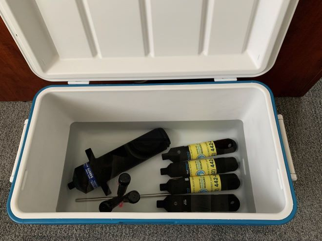

Water Quality Data
CMAR collects high resolution temperature, dissolved oxygen, and salinity data through the Water Quality branch of the Coastal Monitoring Program.
Data Collection
Water Quality data is collected using moorings referred to as “sensor strings”. A typical sensor string configuration consists of a rope attached to the seafloor by an anchor and suspended by a sub-surface buoy, with sensors attached at various depths (Figure 1). Most strings deployed since 2018 are attached to the anchor by an acoustic receiver with a release mechanism. The receiver also logs detections of tagged animals including great white sharks, sturgeon, and tuna for the Ocean Tracking Network.
Characteristics of the station location1 and stakeholder needs dictate the string design2. Sensor strings are generally deployed 200 m to 1000 m from shore, in depths up to 75 m. Historically, strings were deployed with only temperature sensors, but in more recent years at least one dissolved oxygen sensor is included (typically at 5 m). At the request of industry, salinity sensors are also included at stations near proposed and existing shellfish aquaculture leases. Some of the sensors used to measure these variables also measure sensor depth. CMAR has also processed and published this opportunistic depth data.
The different sensor string configurations are described in the table below and (Figure 2):
| sub-surface buoy | Attached to sub-surface buoy. Typically has an acoustic release, but sometimes retrieved by diver or drag line. Does not float with tide. |
| surface buoy | Attached to surface buoy. Floats with tide. |
| attached to gear | Typically attached to aquaculture gear, but may be attached to another structure. Floats with tide. |
| attached to fixed structure | Attached to wharf, bridge, or pole. Does not float with tide. |
| floating dock | Attached to a floating dock. Floats with tide. |
| unknown | Configuration not indicated in deployment log. |

Sensor Validation
Prior to deployment, the sensor calibration is validated using a simple cooler test. Code to run the validation test is published in CMAR’s R package calval. The CMAR Sensor Validation App provides a user interface for running the code.
Pre-Deployment Val
Sensors are set to record at 10 - 15 minute intervals and submerged in a well insulated container (cooler) of water for at least 24 hours. Seawater is used for tests with salinity sensors.
After the recording period, data from all sensors is offloaded. Each observation is compared to the median value of all sensors in the container. Sensors with > 10% of measurements outside of the acceptable range indicated in the sensor manual are re-validated. A temperature or salinity sensor that fails 2 consecutive validation tests is sent to the manufacturer for maintenance.
Dissolved oxygen sensors are included in the validation test, but do not reliably pass. Sensors in the same cooler at the same time show different magnitudes and trends in dissolved oxygen. It is not feasible to re-test all sensor that fail, and so they are deployed regardless of the validation results. The observations undergo strict quality control on retrieval.

Post-Deployment Validation
Retrieved sensors undergo a post-deployment validation test, which follows the same procedures as the pre-deployment validation test. The post-deployment tests identify sensors that drifted, were impacted by biofouling, or were damaged.
Data Access
Coastal Monitoring Program Water Quality Data can be accessed from several platforms. Summary reports are available on the CMAR Data Access Map. Full data sets can be downloaded from the Nova Scotia Open Data Portal and the CIOOS Atlantic.